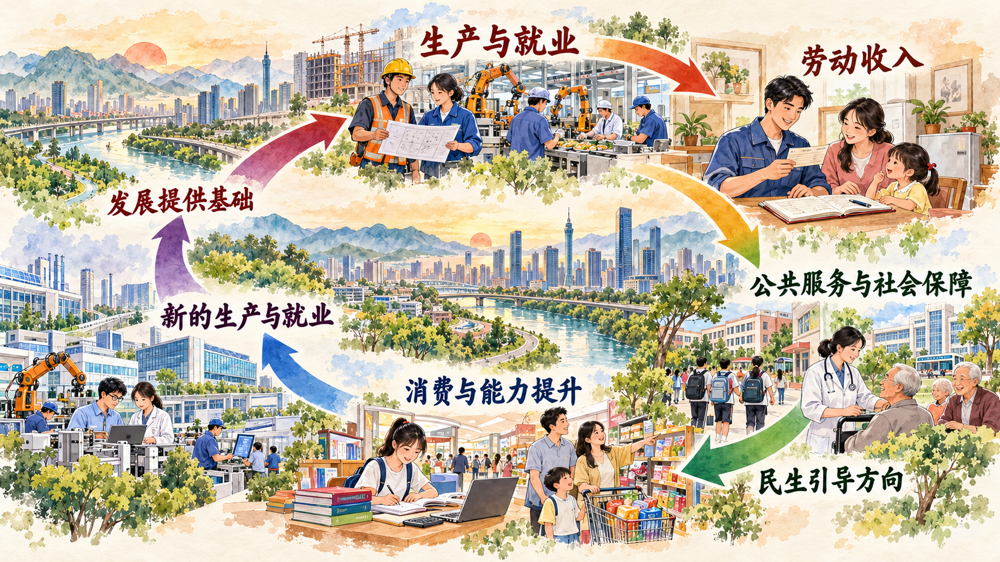

民生问题看似由衣食住行、就业就医等具体事项构成，背后连接着发展的目的、公共资源的配置方式和国家治理的价值取向。理解民生，既要看到群众身边一件件具体小事，也要把这些小事放到党的性质宗旨、社会主义生产目的和中国式现代化目标中考察。
一、民生是人民幸福之基
人民对美好生活的需要具有具体内容。一个大学生关注学费、住宿、实习和就业，进入家庭生活后会继续面对住房、育儿、医疗、养老等问题。随着社会发展，民生需求还会由基本生存扩展到公平教育、优质医疗、公共文化、生态环境和发展机会。民生建设因此既要保障基本生活，也要为人的全面发展创造条件。
中国共产党坚持全心全意为人民服务，把人民立场贯穿治国理政。社会主义生产的目的在于满足人民日益增长的美好生活需要。经济增长、技术进步和产业升级最终需要体现为更加充分的就业、更合理的收入、更可靠的社会保障和更丰富的精神文化生活。民生状况由此成为观察发展成果是否由人民共享的重要窗口。
二、人民获得感幸福感安全感更加充实、更有保障、更可持续
获得感来自人民对发展成果的真实感受。新增就业岗位、基本医保结算、困难救助、普惠托育和老旧小区改造，只有进入具体生活并解决实际问题，才会转化为能够感知的获得。幸福感还来自稳定预期和发展机会，人们既关心今天能否获得服务，也关心明天能否持续生活和发展。
安全感要求社会能够分散个人难以独自承担的风险。疾病、失业、工伤、失能和自然灾害都可能使家庭生活突然承压。社会保险、社会救助、公共卫生和应急体系通过共同筹资、专业服务和制度兜底，把分散的个人风险转化为可以共同应对的社会风险。可持续则要求民生制度与经济发展水平、财政承受能力和人口结构相协调，使当前保障能够稳定延续。
三、坚持在发展中增进民生福祉
发展为改善民生提供物质基础，就业、收入和消费又会形成新的发展动力。企业扩大生产创造岗位，劳动者通过就业获得收入；公共服务和社会保障稳定家庭预期，使人们能够进行教育、健康和技能投资；消费需求和劳动能力提升进一步推动生产与创新。民生建设进入经济社会循环，体现发展为了人民、发展依靠人民、发展成果由人民共享。

民生建设需要处理需要与可能、当前与长远的关系。尽力而为要求紧扣群众急难愁盼，集中资源解决底线问题和突出问题；量力而行要求从发展阶段和财政能力出发，形成合理稳定的保障标准。普惠性制度扩大基本服务覆盖，基础性制度维护社会正常运行，兜底性制度保障困难群体基本生活，三类制度相互配合，使民生改善更加公平、均衡、可及。